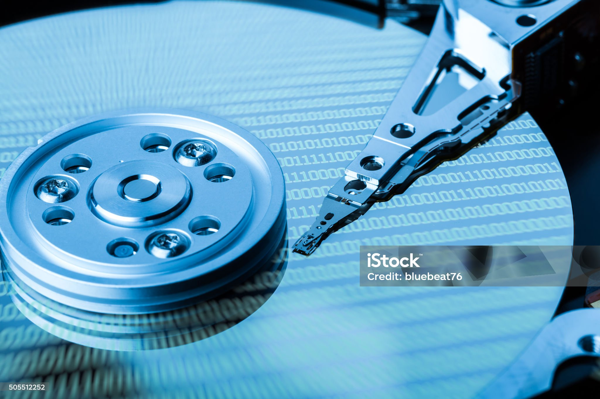
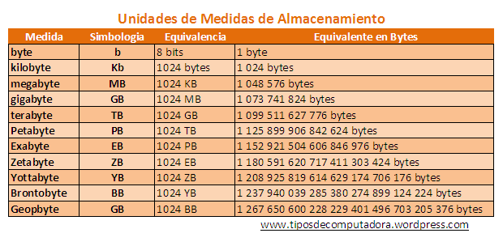

DISPOSITIVOS DE ALMACENAMIENTO
Sin que nos demos cuenta los dispositivos de almacenamiento son una parte esencial en los dispositivos electrónicos como celulares, tabletas y laptops que utilizamos en nuestro día a día, estos se definen como el medio físico (hardware) se encarga de recopilar, almacenar e incluso recuperar datos e información de manera eventual o permanente.
¿Como se clasifican?
• Dispositivos primarios
“Son aquellos que guardan información en la memoria del computador, por lo que suelen emplearse de manera continua,
recibiendo un flujo constante de electricidad.” (Editorial Etecé, 2023)
• Dispositivos secundarios
“Son, por el contrario, de uso eventual, y almacenan de manera secuencial la información en dispositivos externos cuando
el usuario así lo disponga, para que pueda llevarlos consigo y recuperarlos dónde y cuando quiera.” (Editorial Etecé, 2023)
Unidades de medida de almacenamiento
Utilidad de los dispositivos de almacenamiento
1. Almacenar datos
Cuando hablamos de esto nos referimos a que tienen la capacidad de guardar archivos, fotos, audio, video, programas entre otras cosas.
2. Portabilidad de información
Muchos de estos al ser dispositivos externos que se pueden conectar y desconectar nos brindan la capacidad de movilizar grandes cantidades de información de un dispositivo a otro.
3. Respaldos y seguridad
Permiten hacer copias de nuestra información por si en algún dado caso se perdiese tengamos la posibilidad de recuperarla.
4. Mejorar el rendimiento de un dispositivo
En este caso tenemos que hablar de dispositivos en concreto como los discos de estado sólido (SSD), que al ofrecer mayores velocidades de escritura y lectura de datos otorgan una mayor velocidad al dispositivo como podría ser una laptop.
5. Expandir el almacenamiento
Cada dispositivo tiene un límite establecido de almacenamiento interno, pero existen alternativas con discos externos o el almacenamiento en la nube que nos permite ampliarlo.
Características de los dispositivos de almacenamiento
1. Capacidad
“Mide la cantidad de datos que puede almacenar el sistema de almacenamiento, y es medida en bytes (Gigabytes o Terabytes, habitualmente, aunque con el Big Data se manejan incluso Petabytes)” (Ambit team, 2020)
2. Rendimiento
“Cómo de rápido y eficiente es el sistema de almacenamiento de datos.” (Ambit team, 2020)
3. Fiabilidad.
“Es la disponibilidad de los datos cuando son solicitados, así como el hecho de disponer de una baja tasa de errores o fallos (por ejemplo, utilizando una configuración RAID).” (Ambit team, 2020)
4. Recuperabilidad
“Mide la capacidad del sistema para recuperar datos tras una pérdida, borrado, corrupción o cualquier otro incidente que impida el acceso a los mismos” (Ambit team, 2020)
Ejemplos de dispositivos de almacenamiento
Disco duro (HDD)
Estos son los dispositivos de almacenamiento más comunes el computadoras y laptops en gran medida porque ofrecen altas capacidades de almacenamiento a bajo costo comparados con dispositivos como las unidades SSD, la funcionalidad de estos se basa en un disco que gira sobre un cabezal, almacenan información de manera magnética, su desventaja principal son las velocidades de lectura y escritura que son sumamente inferiores comparadas como anteriormente mencionamos una unidad SSD, y su velocidad dependerá de a cuantas RPM (Revoluciones Por Minuto) gire el disco.
• Tecnologías magnéticas: utilizan discos giratorios y cabezales móviles que utilizan campos magnéticos para almacenar y acceder a datos.
• Alta capacidad de almacenamiento: Proporcionan grandes cantidades de espacio para almacenar datos, que van desde gigabytes hasta varios megabytes.
• Asequibles: Generalmente son más baratos por GB en comparación con otros tipos de almacenamiento, como los SSD.
• Velocidad más lenta: aunque almacenan grandes cantidades de datos, pueden leer y escribir datos más lentamente que los SSD, esto debido a que dependiendo las revoluciones a las que gire el disco se tardara mas en acceder a los datos.
• Sensible a golpes y movimientos bruscos: Dado que sus piezas están en movimiento, puede dañarse si hay un movimiento brusco.
• Líder en almacenamiento masivo: a pesar de la competencia de los SSD más rápidos y duraderos, siguen siendo la primera opción para grandes cantidades de datos.
Unidad de estado sólido (SSD)
“Un SSD (Solid State Drive) es una unidad de almacenamiento con memoria no volátil. Este tipo de unidades se basa en chips de memoria flash, por lo que no contiene ninguna parte móvil o mecánica como ocurre con los discos duros tradicionales.” (Valero, 2023)
• NAND Flash
“La memoria NAND es la más comúnmente utilizada en los SSD. Es una memoria no volátil que puede retener datos incluso cuando la alimentación se interrumpe. La memoria NAND se divide en dos tipos: SLC y MLC. La memoria SLC es más rápida y duradera, pero también más costosa, mientras que la memoria MLC es más barata y tiene una capacidad de almacenamiento mayor, pero también es menos duradera.” (Valero, 2023)
• 3D NAND
“Esta tecnología permite apilar varias capas de memoria NAND verticalmente, lo que permite una mayor densidad de almacenamiento y una mayor capacidad de almacenamiento en un espacio más pequeño. La memoria 3D NAND también es más rápida y duradera que la memoria NAND plana.” (Valero, 2023)
• SLC Cache
“Algunos SSD utilizan una pequeña cantidad de memoria SLC como caché para acelerar el rendimiento de lectura y escritura. La memoria SLC es más rápida y duradera que la MLC, TLC y QLC NAND, por lo que la utilización de una pequeña cantidad como caché puede mejorar significativamente el rendimiento del SSD.” (Valero, 2023)
Dispositivos de almacenamiento óptico
Los CD, DVD y discos Blu-ray no sirven sólo para ver películas o escuchar canciones de igual manera pueden utilizarse como dispositivos de almacenamiento. Se conocen como dispositivos de almacenamiento o medios ópticos.
• Los CD-ROM, DVD-ROM y BD-ROM
“Son discos de almacenamiento óptico de solo lectura. Los datos escritos en ellos son permanentes y no pueden quitarse o sobrescribirse. Esta es la razón por la que no pueden utilizarse como almacenamiento personal. En su lugar, se suelen utilizar para programas de instalación de software.” (Dropbox)
• El CD
“Puede almacenar hasta 700 MB de datos, el DVD-DL puede almacenar hasta 8,5 GB y el Blu-Ray puede almacenar entre 25 y 128 GB de datos.” (Dropbox)